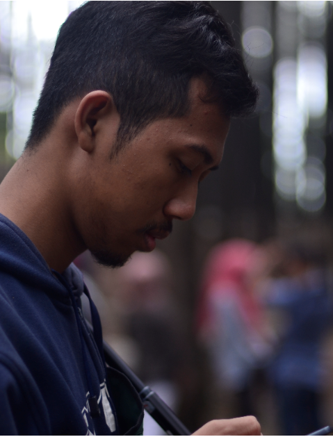

Android Developer
Aku hanyalah seorang pemula yg masih belajar dan masih jauh dari kata sempurna. Berusaha menjadi yg lebih baik dari sebelumnya adalah salah satu hal selalu aku wujudkan. Dan nikmati hidupmu senikmat mungkin, karena penyesalan itu selalu di akhir.
Android Studio
Photoshop
Premiere
CorelDraw
Comunication
Marketing
Nea Meiliandari (Pendidikan Teknik Boga 2016-UNY)
Oke temen-temen, buat kalian semua yg kesusahan atau bahkan gk bisa editing video sendiri buat tugas dan yang lainnya. Aku mau recommend @ar_official nich. Kerjanya cepat dan hasilnya dijamin bagus, aku udah buktiin kok dan harganya terjangkau buat mahasiswa kayak aku. Jadi, jangan ambil pusing langsung aja hubungi @ar_official oke 😌👌
Ratna Dwi Cahyani Sawab (Pendidikan Teknik Boga 2016-UNY)
Punya tugas seputar edit video? atau Kesusahan buat edit video? @ar_offical jawabannya!! Pengerjaanya cepet dan hasilnya keren bangetlah pokoknya.
Pia Celestine (Pendidikan Teknik Boga 2016-UNY)
Edit video di @ar_offical hasilnya, keren mantul mantul mantap betul 🥰🥰
Bantul, Yogyakarta
Phone: +62 895332748504
Email: rezaadnan62@gmail.com
Instagram: @adnanreza21